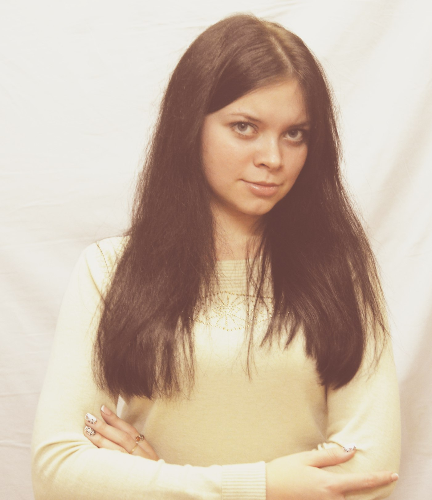

Ivanova Inna
Contacts
Phone number: +375(33)648-58-33
e-mail: innainnaivanov@yandex.ru
LinkedIn Account
Html Academy Account
Summary
To achieve high results in the professional field, to get a job in a prestigious company, to climb the career ladder is my goal. Important for me is the realization of creative potential, the development of my professional skills. My personal qualities are: determination, goodwill, feasibility, punctuality, desire to learn. In my free time I am fond of English, PhotoShop and drawing.
Skills
- HTML
- CMS
- CSS
- OpenCart
- DSpace
- WordPress
Experience
I work at the Vitebsk state technological University (VSTU library) as a software engineer.
Responsibilities: maintaining and adding new features on the site, maintaining databases.
My graduation project
Education
- Bachelor degree: Vitebsk state technological University, specialty: software engineer(2013-2017)
- Master degree: Vitebsk state technological University, specialty: Automation of technological processes and productions (2017-2018)
- English: Language classes Light English in Vitebsk (4 months A0-A1, 6 months A1-A2)